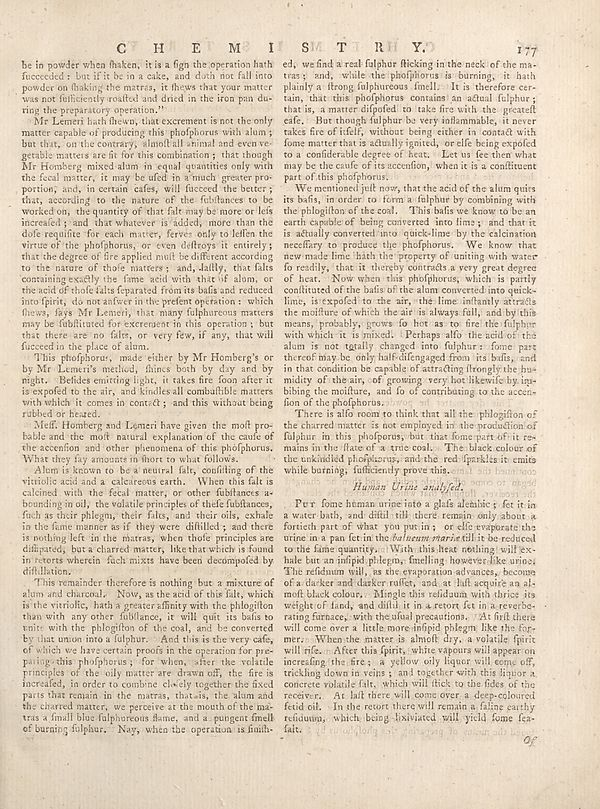

Source · scan and Parse blocks
Layers 2

Parse text by block reading order
- 0Page-headerC H E M I S SI T R Y. 17
- 1Textbe in powder when shaken, it is a lign the operation bath fucceeded i but if it be in a cake, and duth not fall into powder on thinking the matras, it thews that your matter was not definitely youtted and dried in the iron pan du- ring the proprietary operation."
- 2TextMr Lemeri hath thewo, that excrement is not the only matter capable of producing this phofhorous with alumy but that, on the contrary, almost all animal and even vegetable matters are fit for that combinations; that though Mr Hongberg mixed alum in equal quantities only with the local master, it may be used in a much greater part portion, and you in certain cafes, will succeed the better; that, according to the nature of the fulbiances to be worked on, the quantity of that fish may be more or the increacity, and that whatever is indeed, more than the dofe requisite for each matter, ferives only to laffen the virtue of the photohorus, or even deflays it entirely that the degree of fire applied until the different according to the nature of those matters i and, kallly, that falls containing exactly the fame acid with that of alum, or the need of the folks far separated from his balls and reflects inno girls, too mustfer in the protein operation , which thews, fays Mr Lemeri, that many fulphureous matters may yet disbulated the excrement in this operation; but that there are no fails, or very few, if any, that will furced in the place of alum.
- 3TextThis phophony, make either by Mr Hongberg’s or by Mr Lemer’s method, flines both by dry and by night. Besides counting light, it takes fire from after its is exposed to the air, and kindles all combultible matters with which it comes in control; and this without being rrabled for hexane.
- 4TextMeff: Homberg and Lemeri have given the most pro-hable and the molt natural explanation of the course of the acordion and other phenomena of the pholphorus. What they lay amounts in floors or what follows.
- 5TextAlom is known to be a neutral fats, confiling of the vintile aid and a deliberate earth. When the falls is calined with the fecal matter, or other fulbiances as bounding in oil, the volatile principles of their fulbiances, fact by the their plagey their files, and their oils, while in the fine manner so if they were difficiled; and then is nothing left in the matras, when thiefe principles are diffused, but a charred matter, like that which is found in recent wherein fach mixers have been decompelled by distillation.
- 6TextThis remainder therefore is nothing but a mixture of alum and churnals. Now, at the acid of the fils, which is the virtific, bath a greater affinity with the phologlinium than with any other fulbiance, it will quit its balls to unite with the phologlin of the coal, and he converted by that some into a fulphur . And that is the very cold of which we have certain proofs in the operation for pre- pairing this phorhons; the whom, after the volatile principle of the only matter we drawn off, the fire is increased, in order to combine closely together the fixed parts that remain in the matras, that sis, the alum and the shared matter, we perceive at the mouth of the matras a final fillon fulphourtsome, and a pungent finish of burning fulphar. Noy, when the operation is finih
- 7Texted, we find a real fulphur flicking in the neck of the ma-tras and, while the phofhorus is burning, it hasn plainly a frong fulphuceus finally. It is therefore cer-tain, that this phofhorus contains an adult fulphur; that is, a means ofgifted to take five with the spreift safe. But though fulphur be very inflammable, it never takes fire of itself, without being either in contact with forms matter to actuality ignored, we still being expelled to a considerable degree of heat. Let us be then what may be the cause of its ascention, when it is a confitment part of the phofhorus.
- 8TextWe mention just now, that the acid of the alum quirs its balls, in order to form a fulphur by combining with the phoglition of the coal. This little we know to be an earth outside of being converted into lime, and that it is actually converted into quick-line by the calcination receifty to produce the phofhorus. We know that new made line, faith the property of writing with water to readily, that it thereby contradicts a very great degree of heat. Now when this phofhorus, which is partly continued of the basis of the alarm contained into quick-lines, is stopped to the salt, the time infanulty athetis the moilture of which the air is always full, and by this means, probably, grows to hot as to fire the fulphur which it is mixed. Perhaps also the acid of the alum is not totally changed into fulphur. Some parts thereof may be, only half-disfangged from its lands, and in that condition be capable of attracting flowingly the humidity of the air, of growing very hot likemically by up- bibing the moilture, and fo of contributing to the accen- fon of the phofhorus.
- 9TextThere is also more to think that all the phlogition of the charred matter is not employed in the production of fulphur in this, phofhorus, but that frame parts of it re-maning in the literal era can be coak.. The block colour of the unikalid phorhorus, and the red lipstick is emits white burning, sufficiently prove this, small air hunters.
- 10TextPurs fome human urine into a glats lethic j fet it in a water bath, and difllr till there remain only about a function path of how you want, or able separate the urine in a pan feet in the _bal neam maria_ differ to reduced to the fame quantity. With this first nothing will ex- back but an initial phlegns, families houses like unipe. Xhi refridonium will, as the evaporation advances, because of a darker and darker roller, and at half acquire an al-mell black colors. Alongside this voldum with three its weight of fluids, and dilit is in a case for it in everbearing furnaces, with the usual precautions. At left there will come over a little more infidelp plegy like the fug-mer. When the matter is already, why a whole spirit will rise. After this spirit, white vapours will appear on interesting this free, a yellow oily liquor will come off, trickling down in veins i and together with the liquide a concrete volatile fate, which will likely to the fides of the receiver. At left there will come over a deep-colored feid old. In the resort there will remain a falling earthy colatum, which being illustrated, will yield some fen-fat.
Provenance page_id, checksum, Parse model
- page_id
- britannica:309f765b1ecc83e0a7f7762e44b4a927a7555443:train:2446
- sha256
- 692d680df6a9023fab76d686360d380fd4e7491a6a607a6f10835cc740d21619
- Parse
- nvidia/nemotron-3.5-parse · finish stop